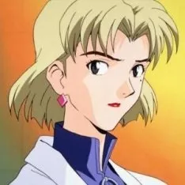

Ritsuko
Scientifique et responsable du Projet E, elle supervise le développement des Evangelions et du superordinateur MAGI. Amie de Misato et de Ryōji, elle est aussi calme, posée et réservée que Misato est extravertie. Tout comme sa mère disparue, brillante scientifique de la NERV, avant elle, Ritsuko est la maîtresse et la complice de Gendō. Par le passé, elle a pris Maya Ibuki sous son aile.